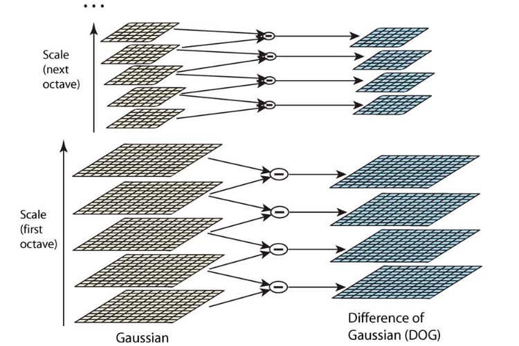
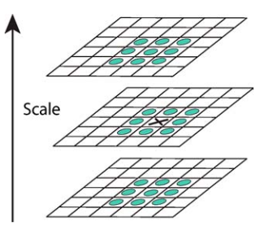
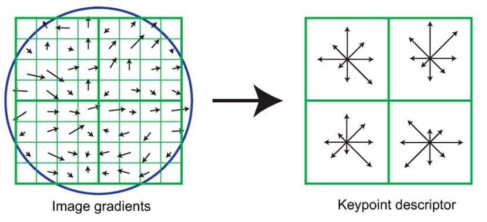

SLAM Basics | SIFT特征
0.概述
SIFT特征1（Scale Invariant Feature Transform）是一种经典的局部特征描述算法，旨在从图像中提取对尺度缩放、旋转及光照变化具有较高鲁棒性的稳定特征点，常用于SLAM、三维重建等领域。SIFT特征核心流程包括四个阶段：
-
尺度空间极值检测：利用DoG函数构建尺度空间，并在多尺度下搜索候选特征点。
-
特征点细化：通过二阶Taylor展开细化特征点的位置与尺度，并剔除低对比度点及边缘点。
-
方向计算：基于邻域梯度直方图为特征点计算方向，赋予特征点旋转不变性。
-
描述子计算：基于特征点邻域信息构建128维描述子，作为后续特征匹配的依据。
1. 理论基础
1.1 尺度空间
图像\(I(x,y)\)的尺度空间定义为函数\(L(x,y,\sigma)\)，满足：
其中\(*\)为卷积运算，\(G(x,y,\sigma)\)为Gaussian核，满足：
1.2 候选特征点检测
尺度空间中的候选特征点定义为DoG函数（Difference of Gaussian）的局部极值，DoG函数\(D(x,y,\sigma)\)由尺度空间中相差常数因子\(k\)的两层计算，即：
采用DoG函数的原因有二：一是DoG函数可以简单地由尺度空间\(L(x,y,\sigma)\)计算，而\(L(x,y,\sigma)\)的获取是描述尺度空间必须进行的计算；二是DoG函数为尺度归一化LoG（Laplacian of Gaussian）函数\(\sigma^2\nabla^2G\)的近似，后者的局部极值被验证相较于梯度、Hessian和Harris响应函数可以产生最稳定的图像特征。
DoG函数近似尺度归一化LoG函数推导
Gaussian核\(G(x,y,\sigma)\)为热扩散方程的解，即有：
因此有：
由于\(k-1\)为常数，其不影响局部极值位置，当\(k\to1\)时，近似误差\(\to0\)。
DoG函数的构造如图所示，具体步骤如下：
-
尺度空间划分：将每个倍频程（Octave，即尺度\(\sigma\)翻倍的过程）划分为\(s\)个等比间隔，确定相邻尺度的比例因子\(k=2^{\frac{1}{s}}\)。
-
增量式Gaussian卷积：在每个倍频程中，对初始图像进行增量式Gaussian卷积，生成\(s+3\)张图像，即\(s+3\)层（Layer）。
-
计算DoG：将相邻层图像作差，得到\(s+2\)张DoG图像，用于后续的局部极值检测。
-
倍频程迭代：一个倍频程处理完后，选取其中尺度\(\sigma\)为初始值\(2\)倍的高斯图像（第\(s\)层），进行隔行隔列采样，作为下一个倍频程的初始图像。第\(0\)个倍频程的初始图像即为原始图像。

DoG函数构造完成后，按照图中的方式筛选局部极值点作为候选特征点，即候选特征点的响应值（DoG函数在该像素处的值）大于或小于上下两层和本层中相邻的26个点的响应值。

为了提取更多候选特征点，可对原始图像上采样作为第\(0\)个倍频程的初始图像，即用线性插值将原始图像的长宽各扩大\(2\)倍。假设原始图像的尺度为\(\sigma=0.5\)（防止混叠的最小值），则上采样图像的等效尺度为\(\sigma=1.0\)，无需额外平滑即可直接用于构造DoG函数。
1.3 特征点细化
对候选特征点进一步细化，可提高特征点稳定性且更易于匹配，为此，考虑DoG函数的二阶Taylor展开，即：
其中\(\mathbf{x}\triangleq(x,y,\sigma)^\top\)，\(\mathbf{x}_0\)为上一步得到的候选特征点位置。定义\(\delta\mathbf{x}=\mathbf{x}-\mathbf{x}_0\)，令DoG函数二阶Taylor展开式关于\(\delta\mathbf{x}\)的导数为\(0\)，解得最优增量\(\delta\mathbf{x}^*\)：
实现时，\(\frac{\partial D}{\partial\mathbf{x}}\)和\(\frac{\partial^2 D}{\partial\mathbf{x}^2}\)由候选点位置\(\mathbf{x}_0\)与相邻像素的差分近似获取。若解得\(\delta\mathbf{x}\)在任意方向上大于\(0.5\)说明相比候选特征点位置\(\mathbf{x}_0\)，DoG函数的局部极大值更接近与\(\mathbf{x}_0\)相邻的某个像素，此时更新候选特征点位置，再次求解\(\delta\mathbf{x}\)。最终细化后的特征点位置\(\hat{\mathbf{x}}\)及响应值\(D(\hat{\mathbf{x}})\)分别为：
响应值\(D(\hat{\mathbf{x}})\)低于阈值\(T_\mathrm{res}\)的特征点被丢弃。
边缘效应消除
DoG函数会在跨越边缘时产生强烈的响应，SIFT作为一种斑点（Blob）特征，为提高稳定性，需要剔除边缘上的特征点。
边缘上点的DoG函数会在跨越边缘方向产生较大的主曲率，同时在沿边缘方向产生较小的主曲率，利用这一特点可有效剔除边缘上的特征点。主曲率可由特征点处的Hessian矩阵\(\mathbf{H}\)计算：
Hessian矩阵\(\mathbf{H}\)由特征点及其相邻像素差分近似。\(\mathbf{H}\)的特征值正比于主曲率，记\(\alpha\)和\(\beta\)分别为较大和较小的特征值，则有：
若行列式\(\det(\mathbf{H})\)为负，则特征点并非DoG函数的极值点，直接剔除。因此只需考虑行列式\(\det(\mathbf{H})\)为正的情况，此时\(\alpha\)与\(\beta\)具有相同的符号，记\(\alpha=r\beta\)，有：
当特征值\(\alpha=\beta\)时，\(\frac{(r+1)^2}{r}\)取到最小值，定义阈值\(T_\mathrm{edge}\)，并剔除所有满足：
的边缘特征点。
1.4 特征点的方向计算
为实现特征点的旋转不变形，根据特征点附近局部图像信息计算特征点的方向，进而在描述子计算时根据特征点的方向进行旋转校正。
对每个特征点，选择尺度空间中与特征点尺度最接近的层计算方向，记该层图像为\(L(x,y)\)，定义梯度幅值\(m(x,y)\)和方向\(\theta(x,y)\)：
计算特征点邻域内每个点的梯度幅值\(m(x,y)\)和方向\(\theta(x,y)\)，并在均分\(360^\circ\)的\(36\)个区间内统计\(\theta(x,y)\)的加权直方图，每个加入直方图的样本由梯度幅值\(m(x,y)\)和\(1.5\)倍关键点尺度的高斯核加权。
直方图的最高峰及任何高于最高峰\(80\%\)的峰对应特征点的方向，换言之，同一尺度、同一位置的特征点可能具有多个方向。为提高精度，每个对应方向的峰与相邻两个区间的值进行抛物线拟合，作为最终的方向。
1.5 描述子计算
描述子的计算由图所示，具体步骤如下：

-
邻域梯度计算：与计算方向相似，选择尺度空间中与特征点尺度最接近的层，在该层上计算特征点邻域内的梯度幅值\(m(x,y)\)和方向\(\theta(x,y)\)，并基于特征点方向进行旋转校正，以实现旋转不变性。每一层的梯度可以预先计算以提高效率。
-
高斯加权：使用\(\sigma\)为窗口宽度一半的高斯核加权邻域内每个点的梯度幅值\(m(x,y)\)，此操作一方面可以避免窗口位置微小变化导致的描述子突变；另一方面可以降低远离描述子中心梯度的权重，因为这些边缘区域易受离散化误差影响。
-
子区域直方图构建：将特征点邻域划分为\(4\times4\)个子区域，在每个区域中统计\(\theta(x,y)\)的加权直方图，权重即为第2步中高斯加权的梯度幅值，每个直方图在梯度方向上设置8个区间。划分子区域是为了提高描述子对梯度偏移的鲁棒性，因为梯度小幅度偏移后，仍贡献相同子区域的直方图。
-
三线性插值：描述子的边界效应指，当采样点从一个子区域移动至另一个子区域，或从一个直方图区间移动至另一个直方图区间时，描述子会产生突变。为削弱边界效应，采用三线性插值将每个采样点的值分配至相邻的直方图区间中。具体而言，每个采样点参与\(x\)、\(y\)坐标（决定采样点所处的子区域）和梯度方向\(\theta(x,y)\)三个分量上相邻的直方图，加入直方图的元素额外以\((1-d)\)加权，\(d\)为采样点到直方图子区域中心（对应\(x\)、\(y\)坐标）和区间中心（对应梯度方向\(\theta(x,y)\)）的距离。
-
描述子向量构造：描述子由包含所有子区域直方图各区间值的向量构成，由于特征邻域被分为\(4\times4\)个子区域，且每个子区域直方图具有\(8\)个区间，故描述子向量具有\(4*4*8=128\)维。
-
光照不变性处理：
-
对比度和亮度不变性：将描述子向量归一化为单位长度，以抵消图像对比度和亮度变化对梯度的影响。（前者相当于每个像素乘以固定常数，后者相当于每个像素叠加固定常数。）
-
非线性光照处理：非线性光照变化可能导致某些梯度幅值发生较大变化，但通常不影响梯度方向。通过截断描述子向量中大于阈值\(T_{\mathrm{illum}}=0.2\)的部分，再进行归一化，减弱非线性光照变化对梯度分布的影响。
-
特征匹配
特征点间的相似程度由对应描述子的欧氏距离度量，通过最近邻搜索、比例阈值测试等方法，可完成特征匹配。
2. OpenCV实现
OpenCV 在 features2d 模块中提供了 SIFT 的检测与描述接口，可以直接用于关键点提取和匹配2。